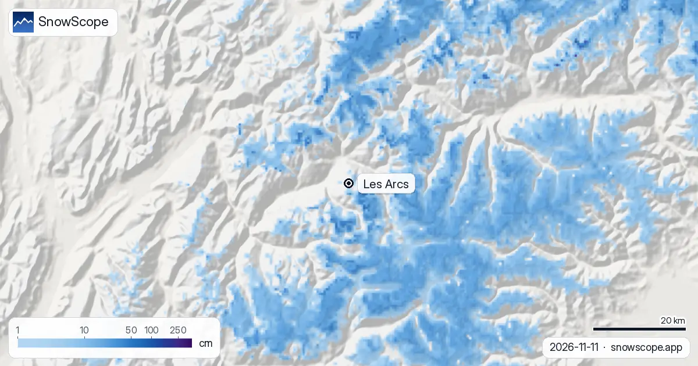
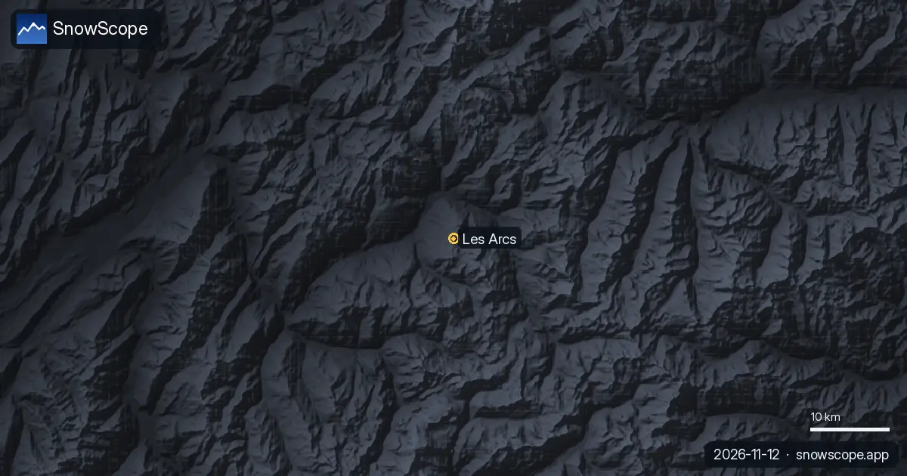

Les Arcs snow conditions and report: 34 cm at the top, a big week ahead (12 November 2026)
Snow conditions at Les Arcs on the 11 November model run: 34 cm at the top of the Aiguille Rouge sector (3205 m), 2 cm at mid-mountain (2213 m) and nothing yet in the valley at 1222 m. The more useful line is the forecast: the next seven days could bring 69 cm at the top and 46 cm at mid-mountain, the first real build-up of the winter.
See the live snow forecast for Les Arcs in the SnowScope appSnow depth, powder alerts and the 3D map, free.
The snow report, height by height
Today: 0 cm at the base, 2 cm at mid-mountain, 34 cm at the top. Past seven days: nothing at the base, 9 cm at mid-mountain, 18 cm at the top, of which 4 cm in the last 48 hours. Next seven days: 2 cm at the base, 46 cm at mid-mountain and 69 cm at the top, with 11 cm at the top already in the next 24 hours.
Think of these as water stored on the mountain: a model estimate for the area with a margin of error of several centimetres, not a stake measurement by the resort. Wind moves early snow around, so a ridge and a hollow at the same height can differ a lot.
What the villages will see
Les Arcs is built as a stair of villages, Arc 1600, Arc 1800, Arc 1950 and Arc 2000, under the Aiguille Rouge, and linked to La Plagne across the valley in the Paradiski area. In mid-November the snow line sits above the villages: the gain of the coming week lands on the upper slopes of Arc 2000 and the Aiguille Rouge first, and mid-mountain only starts building a base.
The mapped area counts 168 km of runs and 48 lifts between 1222 m and 3205 m, so there is a lot of terrain between the dry valley and the white top.

Normal for the date?
Roughly, yes. Across our 46 past winters (1980-81 to 2025-26) the first snow at the top usually lies by 24 September, at mid-mountain by 6 October and at the base by 22 October. A usual November has 6 cm at the base, 25 cm at mid-mountain and 73 cm at the top, so the top is a little behind and mid-mountain is thin.
December usually brings the cover up to 27 cm, 68 cm and 157 cm. If the forecast holds, Les Arcs will be close to its usual mid-November state within a week.
The winter ahead at Les Arcs
This is one of the more reliable snow areas of the Alps for its height: at mid-mountain, 21 weeks of the winter have 50 cm or more in 9 of 10 past winters. The peak of a middle winter is 84 cm at the base, 191 cm at mid-mountain and 379 cm at the top, with April usually the deepest month up high (315 cm). Last winter peaked at 100 cm, 212 cm and 342 cm.
Tips for skiers
- Follow the top and mid-mountain lines this week: the forecast changes with every run, and 69 cm is an estimate, not a promise.
- Snow on our map does not mean the lifts are running: the resort sets the opening dates.
- After a big dump, the Météo-France avalanche bulletin comes before any off-piste plan.
More maps (external sites)
References and credits
- Les Arcs, official site (villages, lifts, opening dates) www.lesarcs.com/
- Météo-France, mountain weather and avalanche bulletins meteofrance.com/meteo-montagne
About these numbers
Snow numbers: the SnowScope snow model, run of 11 November 2026, at three heights of the resort (a model estimate for the area, not resort measurements), and our snow history, 46 past winters (1980-81 to 2025-26), a model of the past corrected for height. Village names: the resort's official site. Run length and lift count: OpenSkiMap mapping. Forecasts change: look at the map before you go.
Official avalanche bulletins: Météo-France – Bulletin d'estimation du risque d'avalanche
Cite this report
For research, teaching or the press: the numbers and charts are free to reuse under CC BY 4.0 with this citation.
SnowScope (2026), Les Arcs snow conditions and report: 34 cm at the top, a big week ahead (12 November 2026), https://snowscope.app/blog/en/2026/11/les-arcs-snow-conditions-report-12-november-2026.html, accessed 2026-11-12
SnowScope (Atlas Labs). (2026, November 12). Les Arcs snow conditions and report: 34 cm at the top, a big week ahead (12 November 2026). SnowScope snow reports. https://snowscope.app/blog/en/2026/11/les-arcs-snow-conditions-report-12-november-2026.html
BibTeX
@misc{snowscope2026lesarcssnowconditionsrep,
author = {{SnowScope (Atlas Labs)}},
title = {Les Arcs snow conditions and report: 34 cm at the top, a big week ahead (12 November 2026)},
year = {2026},
month = nov,
howpublished = {\url{https://snowscope.app/blog/en/2026/11/les-arcs-snow-conditions-report-12-november-2026.html}},
note = {Published 2026-11-12 09:44 UTC; accessed 2026-11-12}
}· CC BY 4.0 · Methods, data and tools →
Les Arcs: snow and temperature by height, this winter vs last (tools) →
Follow Les Arcs
Free: a message when fresh snow is coming, and the forecast every morning.
More snow reports

Artesina got 44 cm of new snow in the last 72 hours. It now has about 20 cm on its upper slopes, according to our snow model.

More snow is on the way: by 10 November our forecast gives 36 cm at Orcières Merlette, 33 cm at Les Deux Alpes and 32 cm at La Grave. Keep in mind: …

A fresh round of snow has reshaped the picture in the Alps, though not every resort shared in it. Fresh snow at La Grave: 61 cm in the last 72 hours, …